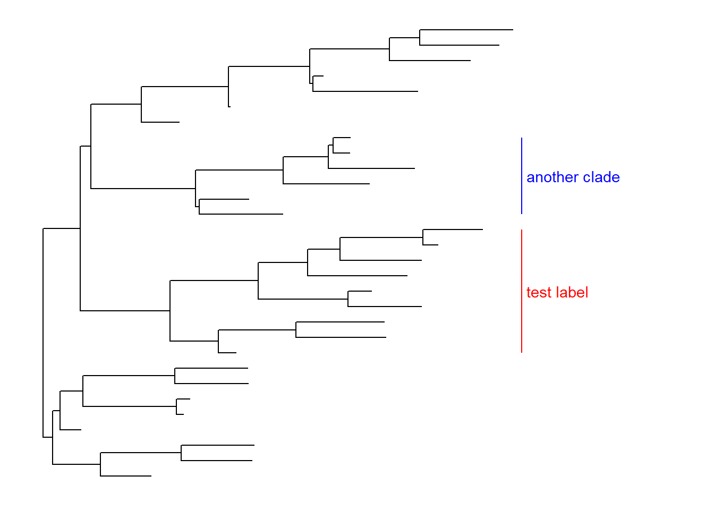
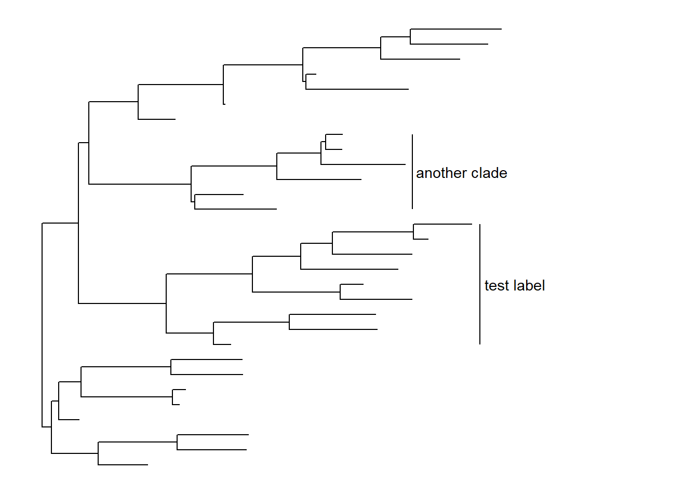
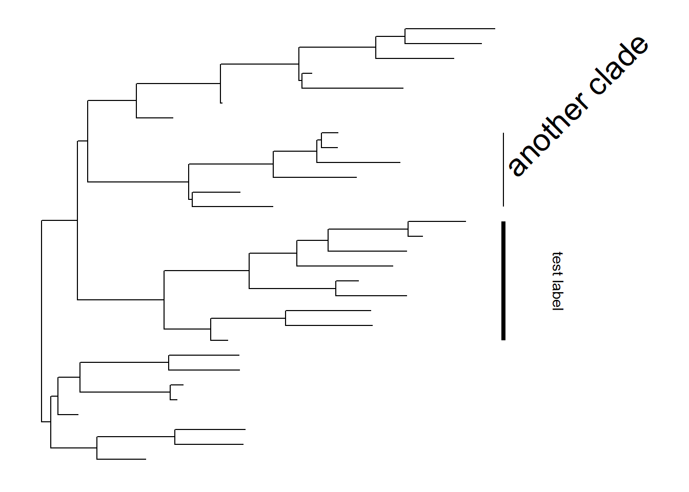
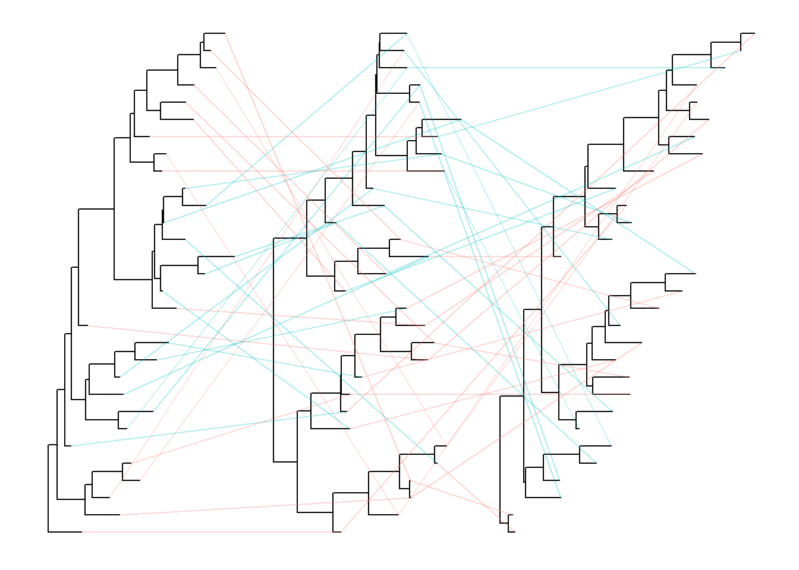

Chapter 5 Phylogenetic Tree Annotation
5.1 Annotate clades
ggtree (Yu et al. 2017) implements geom_cladelabel layer to annotate a selected clade with a bar indicating the clade with a corresponding label.
The geom_cladelabel layer accepts a selected internal node number. To get the internal node number, please refer to Tree Manipulation vignette.
set.seed(2015-12-21)
tree <- rtree(30)
p <- ggtree(tree) + xlim(NA, 6)
p + geom_cladelabel(node=45, label="test label") +
geom_cladelabel(node=34, label="another clade")
Users can set the parameter, align = TRUE, to align the clade label, and use the parameter, offset, to adjust the position.
p + geom_cladelabel(node=45, label="test label", align=TRUE, offset=.5) +
geom_cladelabel(node=34, label="another clade", align=TRUE, offset=.5)
Users can change the color of the clade label via the parameter color.
p + geom_cladelabel(node=45, label="test label", align=T, color='red') +
geom_cladelabel(node=34, label="another clade", align=T, color='blue')
Users can change the angle of the clade label text and relative position from text to bar via the parameter offset.text.
p + geom_cladelabel(node=45, label="test label", align=T, angle=270, hjust='center', offset.text=.5) +
geom_cladelabel(node=34, label="another clade", align=T, angle=45)
The size of the bar and text can be changed via the parameters barsize and fontsize respectively.
p + geom_cladelabel(node=45, label="test label", align=T, angle=270, hjust='center', offset.text=.5, barsize=1.5) +
geom_cladelabel(node=34, label="another clade", align=T, angle=45, fontsize=8)
Users can also use geom_label to label the text.
p + geom_cladelabel(node=34, label="another clade", align=T, geom='label', fill='lightblue')
5.1.1 Annotate clades for unrooted tree
ggtree provides geom_clade2 for labeling clades of unrooted
layout trees.
pg <- ggtree(tree, layout="daylight")
pg + geom_cladelabel2(node=45, label="test label", angle=10) +
geom_cladelabel2(node=34, label="another clade", angle=305)
5.2 Labelling associated taxa (Monophyletic, Polyphyletic or Paraphyletic)
geom_cladelabel is designed for labelling Monophyletic (Clade) while there are related taxa that are not form a clade. ggtree provides geom_strip to add a strip/bar to indicate the association with optional label (see the issue).
nwk <- system.file("extdata", "sample.nwk", package="treeio")
tree <- read.tree(nwk)
ggtree(tree) + geom_tiplab() +
geom_strip(5, 7, barsize=2, color='red') +
geom_strip(6, 12, barsize=2, color='blue')
5.3 Highlight clades
ggtree implements geom_hilight layer, that accepts an internal node number and add a layer of rectangle to highlight the selected clade.
ggtree(tree) + geom_hilight(node=21, fill="steelblue", alpha=.6) +
geom_hilight(node=17, fill="darkgreen", alpha=.6)
ggtree(tree, layout="circular") + geom_hilight(node=21, fill="steelblue", alpha=.6) +
geom_hilight(node=23, fill="darkgreen", alpha=.6)
Another way to highlight selected clades is setting the clades with different colors and/or line types as demonstrated in Tree Manipulation vignette.
5.3.1 Highlight balances
In addition to geom_hilight, ggtree also implements geom_balance
which is designed to highlight neighboring subclades of a given internal node.
ggtree(tree) +
geom_balance(node=16, fill='steelblue', color='white', alpha=0.6, extend=1) +
geom_balance(node=19, fill='darkgreen', color='white', alpha=0.6, extend=1)
5.3.2 Highlight clades for unrooted tree
ggtree provides geom_hilight_encircle to support highlight
clades for unrooted layout trees.
pg + geom_hilight_encircle(node=45) + geom_hilight_encircle(node=34, fill='darkgreen')
5.4 Taxa connection
Some evolutionary events (e.g. reassortment, horizontal gene transfer) can be modeled by a simple tree. ggtree provides geom_taxalink layer that allows drawing straight or curved lines between any of two nodes in the tree, allow it to represent evolutionary events by connecting taxa.
ggtree(tree) + geom_tiplab() + geom_taxalink('A', 'E') +
geom_taxalink('F', 'K', color='red', arrow=grid::arrow(length=grid::unit(0.02, "npc")))
5.5 Tree annotation with output from evolution software
The treeio package implemented several parser functions to parse output from commonly used software in evolutionary biology.
Here, we used BEAST (Bouckaert et al. 2014) output as an example. For details, please refer to the Importer vignette.
file <- system.file("extdata/BEAST", "beast_mcc.tree", package="treeio")
beast <- read.beast(file)
ggtree(beast, aes(color=rate)) +
geom_range(range='length_0.95_HPD', color='red', alpha=.6, size=2) +
geom_nodelab(aes(x=branch, label=round(posterior, 2)), vjust=-.5, size=3) +
scale_color_continuous(low="darkgreen", high="red") +
theme(legend.position=c(.1, .8))
References
Yu, Guangchuang, David K. Smith, Huachen Zhu, Yi Guan, and Tommy Tsan-Yuk Lam. 2017. “Ggtree: An R Package for Visualization and Annotation of Phylogenetic Trees with Their Covariates and Other Associated Data.” Methods in Ecology and Evolution 8 (1): 28–36. https://doi.org/10.1111/2041-210X.12628.
Bouckaert, Remco, Joseph Heled, Denise Kühnert, Tim Vaughan, Chieh-Hsi Wu, Dong Xie, Marc A. Suchard, Andrew Rambaut, and Alexei J. Drummond. 2014. “BEAST 2: A Software Platform for Bayesian Evolutionary Analysis.” PLoS Comput Biol 10 (4): e1003537. https://doi.org/10.1371/journal.pcbi.1003537.